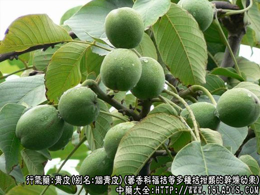
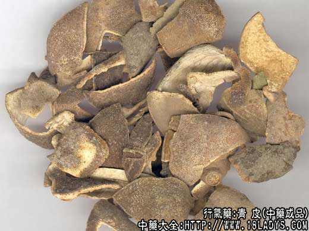

青皮为常用中药。《本草纲目》列于果皮山果类的桔项下。原名青桔皮。由桔柑类的幼果被吹落或采摘时期早晚的不同，形状大小不一，皮的薄厚亦有差异。商品上一般将幼果原品晒干称个青皮；近成熟的果实。其皮色尚绿者剖成四裂，去掉果瓤晒干者称四花青皮。
一、个青皮
别名：均青皮、青皮子。
来源：为芸香科植物常绿小乔木福桔、朱桔、柑、橙等多种桔柑类的干燥幼果。均为栽培。
产地：主产于广东、浙江、福建、江西、湖南、广西、四川、台湾等地。
性状鉴别：幼果不规则的圆球形。1、直径2至3厘米（习称大青皮）；2、直径1.3厘米以上（习称扣青皮）；3、直径0.7厘以下（习称中青皮、均青皮）；直径0.3厘米以上到0.7厘米以下（均称小青皮或青皮子）。表面皮褐色或黑绿色，粗糙皱缩，并有疣状突起，部分表面被类白色蜡粉。顶端有突起的花柱残基，基部有圆疤状果柄残基。质坚硬。横切面果皮厚1～3毫米，外层显油孔，中央有7～13果瓤。气清香，味苦辛。
以个均匀，体重皮厚，内瓤少者为佳。
二、四花青皮
别名：四花皮。
来源：为芸香科植物常棣小乔木福桔、大红桔、甜橙近成熟的干燥果皮。均为栽培。
产地：主产于福建、广东、江西、四川、湖南、云南等地。
性状鉴别：果皮剖成四瓣，基部相连，形状大小不一，裂片多数为长椭圆形，厚约1～3毫米，顶端尖，边缘光滑，稍向内卷。表面黑绿色或灰黄色，内表面黄白色，有时可见网装脉纹。质坚硬，断面边缘有油点。气清香、味苦辛。
以外皮青，内色白，香气浓者为佳。
主要成分：与陈皮相同。
药理作用：健胃作用于陈皮相同，但行气、化滞效力较陈皮强，具有一定的发汗散寒作用。
性味：苦、辛、温。
归经：入肝、胆经。
功能：破气散结，舒气止痛。
主治：肝气郁结，胸闷肋痛，乳痛，疝气，食结，腹胀。
临床应用：1、用于治疗胸胁胀疼。如属肝胃不和引起者（例如慢性肝炎时的肝区痛），常配柴胡、香附、郁金，有肝脾肿大的再加鳖甲、党参；如属精神因素引起的气郁胀痛，配木香、乌药、砂仁等，方如七味调气汤；如属跌打外伤引起胸胁痛，则配赤芍、肉桂、枳壳。
2、用于治疗消化不良。有胃脘痞满、食积不化者尤其适用，此时单用陈皮已不够力，须加青皮破气散积、并配山楂、麦芽、神曲等。
3、用于治疗乳痛、乳房结核。可用青皮配银花、公英、浙贝、炒山甲等，有消痈散结作用。
使用注意：气虚及汗多者不宜多用。
青皮与陈皮比较，两者性味基本相同，但青皮性较猛烈，长于疏肝破气，散结化滞，治胁痛、痞积、乳肿；陈皮则长于健脾燥湿、理气化痰，治脘满、吐泻、痰嗽。
用量：3～6g。
处方举例：七味调气汤：青皮6g、香附3g、木香1.5g、藿香3g、乌药3g、砂仁3g、甘草3g，水煎服。
炮制：切片、醋炒。
注：成分含挥发油，主要成分为柠檬烯，果肉中含橙甙、枸橼酸及还原糖。